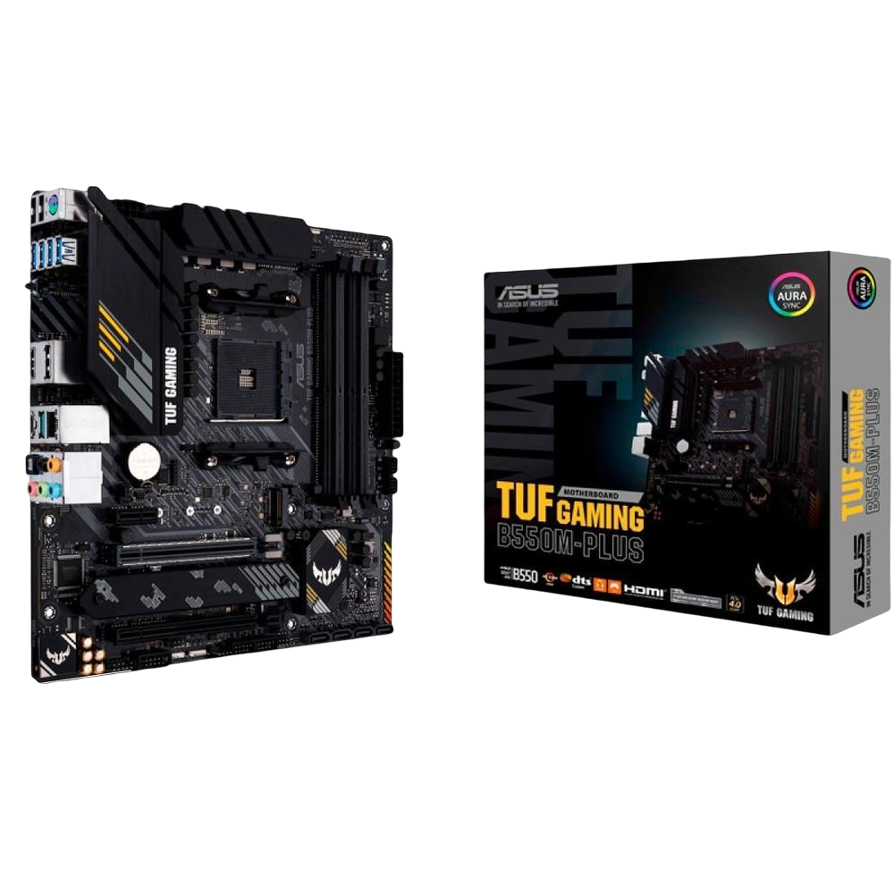

Configurações
Placa mãe
>Placa Mãe Asus TUF GAMING B550M-PLUS AMD AM4 DDR4 mATX
Marca ASUS
Soquete da CPU Soquete AM4
Tecnologia de memória RAM DDR4
Processadores compatíveis 10th Generation Intel Core
Tipo de chipset amd_b_550
Ficha técnica
Placa-mãe gaming micro ATX AMD B550 (Ryzen AM4) com PCIe 4.0, M.2 duplo, 10 fases de alimentação com DrMOS,
Rede de 2,5 Gb, HDMI, DisplayPort, SATA 6 Gbps, USB 3.2 Gen 2 Tipo-A e Tipo-C e suporte a iluminação RGB
Aura Sync
Soquete AMD AM4: pronto para processadores AMD Ryzen de 3ª geração - Solução de energia aprimorada: 8+2
fases de alimentação, conector ProCool, componentes TUF de nível militar e VRM Digi+ para máxima
durabilidade
Refrigeração abrangente: dissipadores de calor no VRM, dissipador de calor sem ventoinha no PCH,
dissipador de calor M.2, header de ventoinha híbridos e utilitário Fan Xpert 2+ - Conectividade de última
geração: suporte para PCIe 4.0 M.2, USB 3.2 Gen 2 Tipo-A e Tipo-C
Feita para jogos on-line: tecnologia de Rede de 2,5 Gb, TUF LANGuard e TurboLAN - Codec Realtek S1200A:
qualidade de áudio cristalina sem precedentes, com taxa de sinal-ruído de 108 dB para saída estéreo e SNR
de 103 dB para entrada
Microfone com cancelamento de ruído por AI: fornece comunicação de voz cristalina no jogo
Para que serve?
Além de permitir o tráfego de informação, a placa-mãe serve também para alimentar alguns periféricos com a energia elétrica
que recebe da fonte do gabinete. Todas essas funções tornam o nome “mãe” algo bem lógico: sem ela, o computador é apenas um
amontoado de chips e placas independentes.

Preço: R$1.095,90
Processador
PROCESSADOR INTEL CORE I5-10400F, 6-CORE, 12-THREADS, 2.9GHZ (4.3GHZ TURBO), CACHE 12MB, LGA1200, BX8070110400F
De forma simples, o processador permite que vários programas sejam abertos e executados ao mesmo tempo, assim como outras
atividades do computador que ocorrem sem que o usuário perceba. É ele que gerencia todas essas tarefas, conecta softwares e
faz o PC funcionar, juntamente com os demais componentes.

Preço:R$698,97